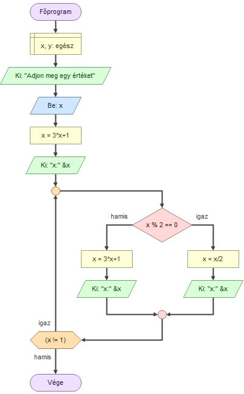

A Collatz-sejtés egy mindmáig megoldatlan matematikai probléma, amely szerint bármely pozitív egész szám esetén a sorozat végül a 4, 2, 1 ciklusba jut.
...ahol n pozitív egész szám.
Adj meg egy számot, és a program kiírja a lépéseket, valamint az iterációk számát.
Folyamatábra (nem teljesen egyezik a kóddal):

További információ: Wikipédia